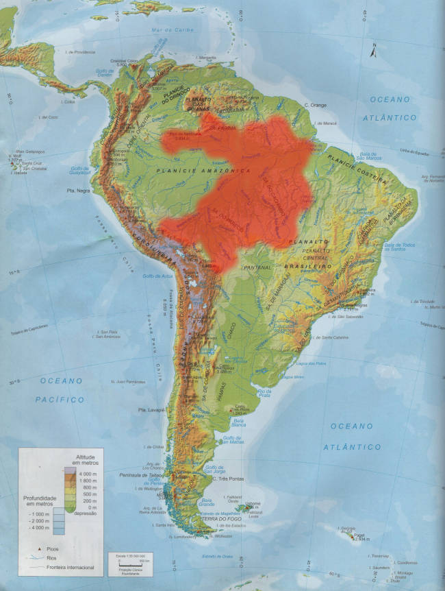

(Não Avaliada/Not Evaluated)
(Não Avaliada/Not Evaluated)
Nome científico: Nannostomus beckfordi Günther, 1872.
Origem: bacia do Amazonas e Rio Negro (Guiana, Suriname, Guiana Francesa, Brasil, Venezuela).
Biotópo: Vive nas margens dos igarapés, geralmente em águas negras com muitos troncos e galhos e substrato de areia ou húmus e serrapilheira.
Temperatura: 24 a 26 oC --- pH: 6,0 - 8,0 --- dH: 18 a 268 ppm. (1 a 15) --- Condutividade: 315,35 μS/cm
Expectativa de vida: 3 anos.
Tamanho: 40 mm --- *Peso: 0,12 - 0,63 g.
Comportamento: pacífico - forma grupos dominados por machos, que defendem pequenos territórios.
Alimentação: onívoro - aceita ração seca - na natureza comem vermes, microcrustáceos e insetos.
Dimorfismo sexual: machos apresentam nadadeira anal curvada e vermelha, já as fêmeas apresentam reta e menos pigmentada.
Reprodução: fácil - espalhadores de ovos (até 200 ovos) - sem cuidado parental.
Incubação: 30 a 40 horas --- Absorção do saco vitelínico: 6 dias.
Observações: Muito apreciada por aquaristas. Proporção de 1 macho para 2 fêmeas.
